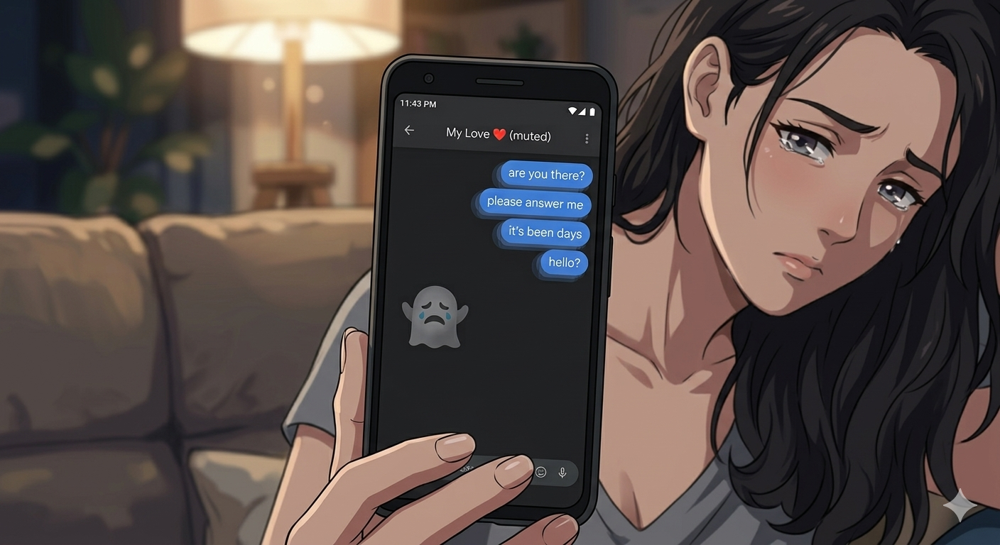

Relationship Disaster-"The ghosting souffle"

"A delicate dish that requires precise timing, emotional unavailability, and the ability to read absolutely zero social cues.
Best prepared when you're 3 months into talking stage, she's sending good morning texts, and you respond with 'lol' and a thumbs up emoji. Serves: 1 (because there's nobody else left)."
Ingredients
- 1x situationship (ripe, but not committed)
- 3 red flags (ignored, obviously)
- 1 attachment style: Avoidant
- Unlimited "I'm busy" excuses
- 1 dating app you never deleted (for 'friends')
- A sprinkle of "we're just vibing"
Steps
- Match on a dating app. Exchange memes for 2 weeks. Build zero emotional depth.
- Go on one amazing date. Overthink everything. Text your friends 47 screenshots.
- She says she really likes you. Panic. Your fight-or-flight activates.
- Start responding slower. "Sorry was gaming" at 2pm on a Tuesday.
- She confronts you. You say "I'm not ready for anything serious" despite acting serious for 3 months.
- She leaves. You're free! ...You're free? ...You're crying to anime OPs at 3am.
- Repeat with a new match. The cycle continues. You are the protagonist of your own tragedy.
Home